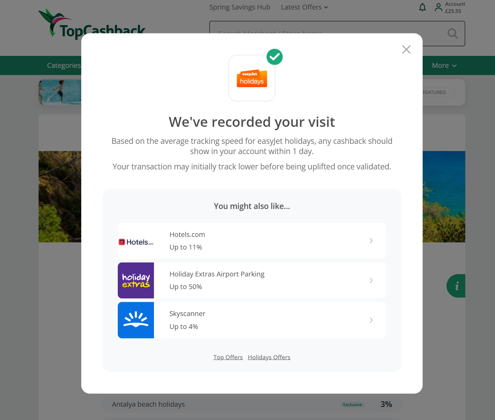
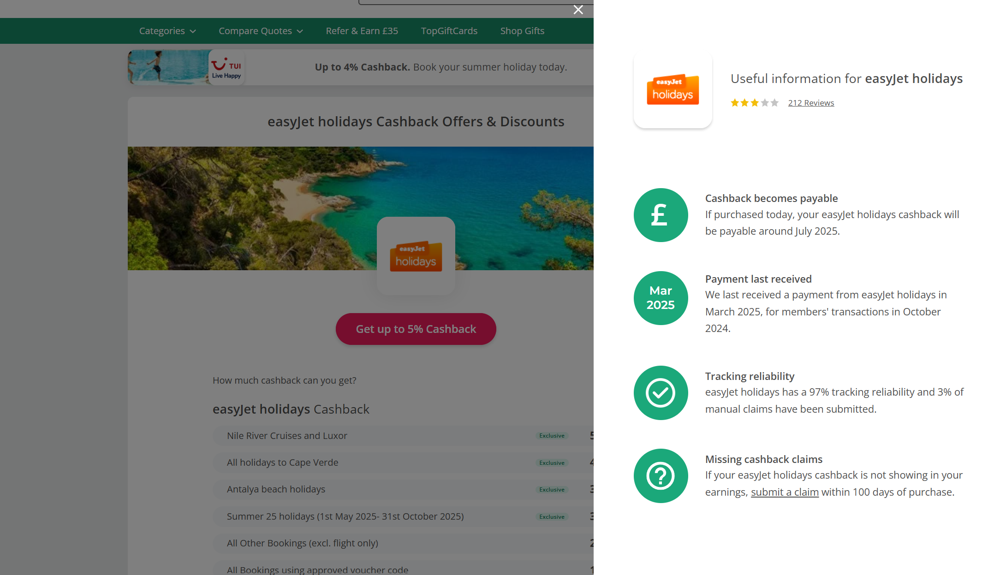
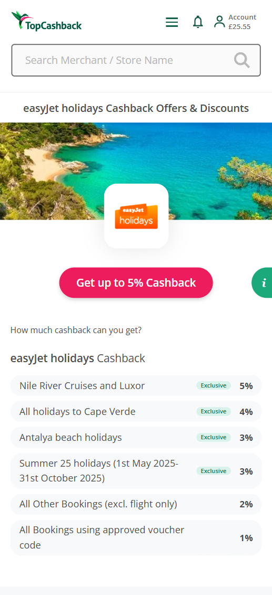
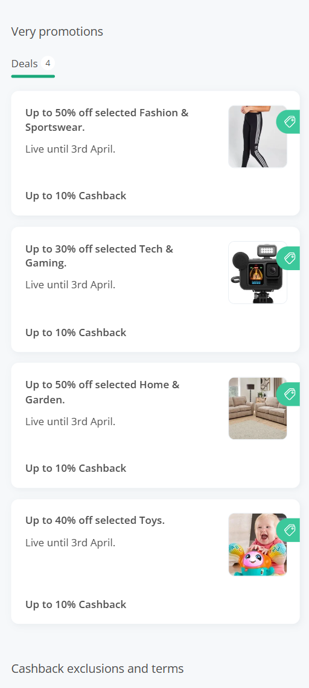
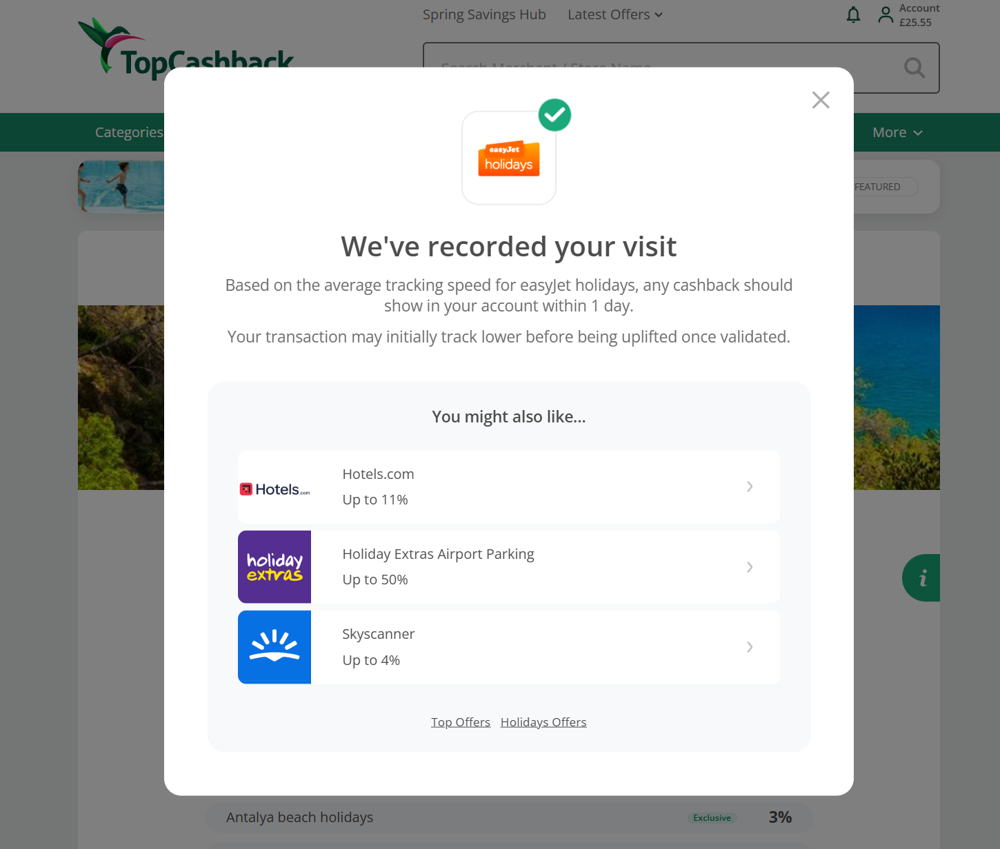
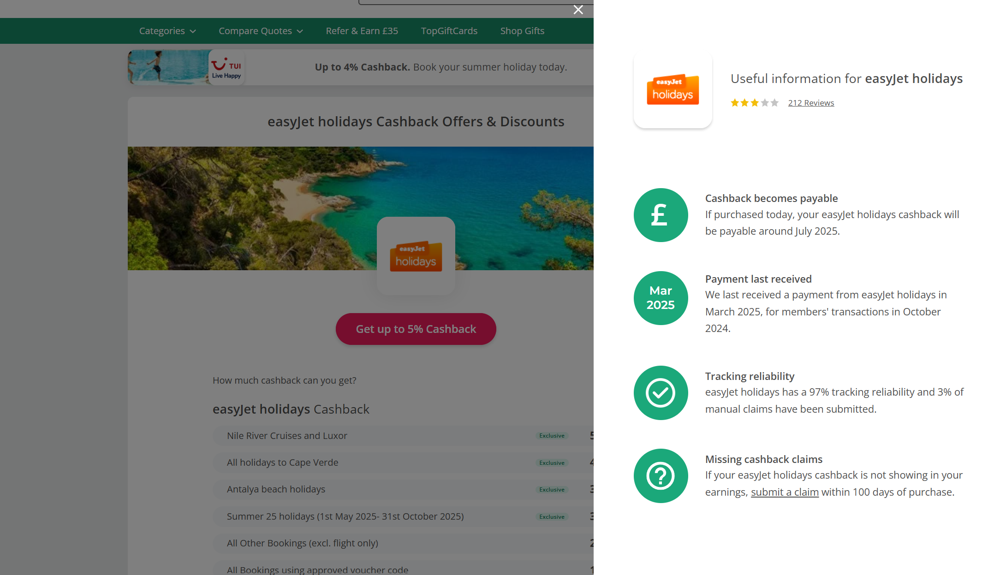
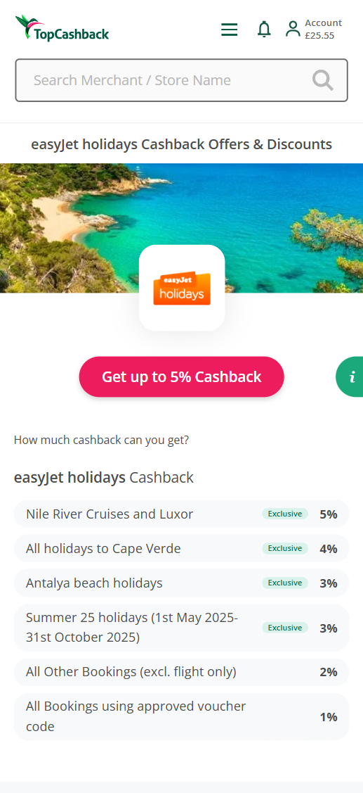
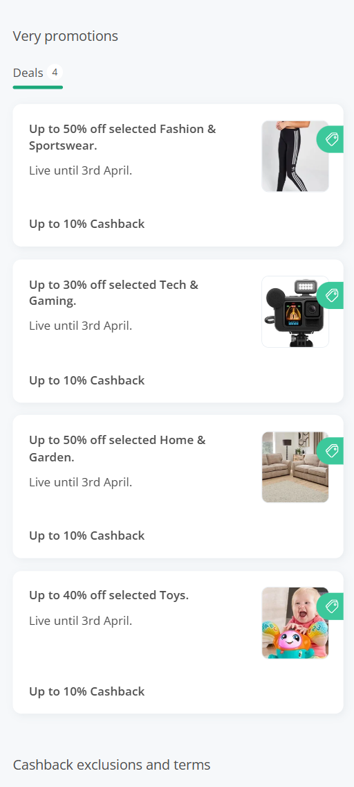

Cross-device testing

- During the later stages of development, I worked closely with testers to perfom cross-device testing using BrowserStack.
- Any device or browser-specific problems were quickly identified and ironed out.
The project aimed to completely overhaul TopCashback's "brand" pages, the pages which individually hold each of the brands on TopCashback's site. Although the existing pages were used as the basis for the redesign, there were many new requirements which had to be designed for and developed, meaning the decision was made to completely rebuild the entire front/back end of brand pages from the ground up.
See the Pen Auto-ordering of rate card categories (JS + CSS) by Willis Dyson (@willisdyson) on CodePen.
See the Pen Merchant page [2 cols, grey strips] by Willis Dyson (@willisdyson) on CodePen.
See the Pen Merchant pages (refined) (full) by Willis Dyson (@willisdyson) on CodePen.
 






